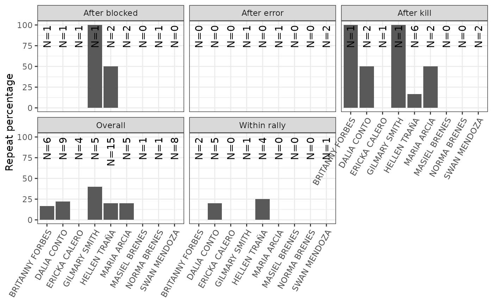

ov_setter_repetition.RdNote: analysis is done on the basis of attack actions, and simply assumes that the setter on court made the set.
ov_setter_repetition(
x,
setter_id,
setter_name,
exclude_attacks = c("PP", "PR", "P2"),
exclude_negative_reception = TRUE,
exclude_highballs = FALSE
)data.frame: the plays data.frame as returned by datavolley::read_dv() or peranavolley::pv_read()
string: (optional) the player ID of the setter to analyze (or provide setter_name). If neither setter_id nor setter_name are provided, all setters will be analyzed separately, and collated results returned
string: (optional) the name of the setter to analyze (ignored if setter_id is provided). If neither setter_id nor setter_name are provided, all setters will be analyzed separately, and collated results returned
character: vector of attack codes to exclude
logical: if TRUE, exclude attacks following poor reception (likely to be out-of-system and therefore might not represent attacks on which the setter had genuine options)
logical: if TRUE, exclude highball attacks (likely to be out-of-system and therefore might not represent attacks on which the setter had genuine options)
A data.frame with columns "team", "setter_name", "setter_id", "player_name", "player_id", "category", "opportunities", "repeats", "repeat%"
x <- plays(ovdata_example("190301_kats_beds", as = "parsed"))
set_reps <- ov_setter_repetition(x, setter_name = "Lukas Tichacek")
library(ggplot2)
ggplot(set_reps, aes(x = player_name, y = `repeat%`)) + geom_col() +
geom_text(aes(x = player_name, label = paste0("N=", opportunities)),
angle = 90, y = 100, hjust = 1, inherit.aes = FALSE) +
facet_wrap(~category) +
theme_bw() +
theme(axis.text.x = element_text(angle = 60, vjust = 1, hjust = 1)) +
labs(x = NULL, y = "Repeat percentage")
#> Warning: Removed 11 rows containing missing values (position_stack).
